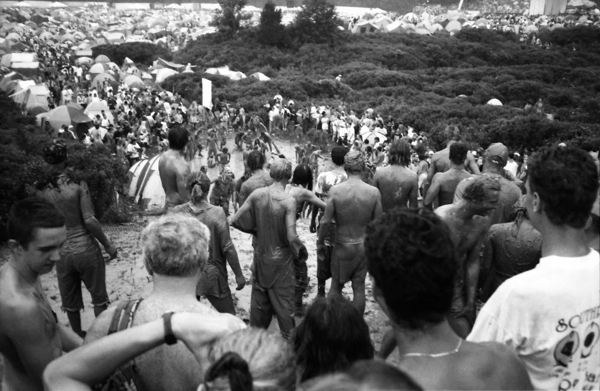

Documenting Woodstock 94
This is a work in progress and is mostly placeholder copy for now.
In the summer of 1994, I grabbed a camera and headed to what was supposed to be a corporate nostalgia cash-grab. Turns out, 350,000 people in the mud can't all be wrong—or adequately prepared.
Adequate documentation of an inadequate amount of porta-potties
The Setup
Woodstock '94 was billed as "2 More Days of Peace & Music." What we got was significantly more mud than advertised, a Green Day riot that stopped the show, and enough flannel to outfit a small lumber town. I brought three rolls of film. In retrospect, that was optimistic.
What I Packed
Dusted off my Boy Scouts era back pack.
- One CANON Sure Shot 35mm Film Camera (adequate for the era)
- Three rolls of Kodak Tri-X 400 (not nearly adequate)
- Rain gear (laughably inadequate)
The Moments Between the Moments
Everyone remembers Nine Inch Nails covered in mud. Fewer people remember the guy in the Phish shirt who shared his Pop-Tart with a stranger during the downpour, or the impromptu drum circle that lasted through dawn while Red Hot Chili Peppers sound-checked. These photos aren't about the stages. They're about the adequate chaos in between.